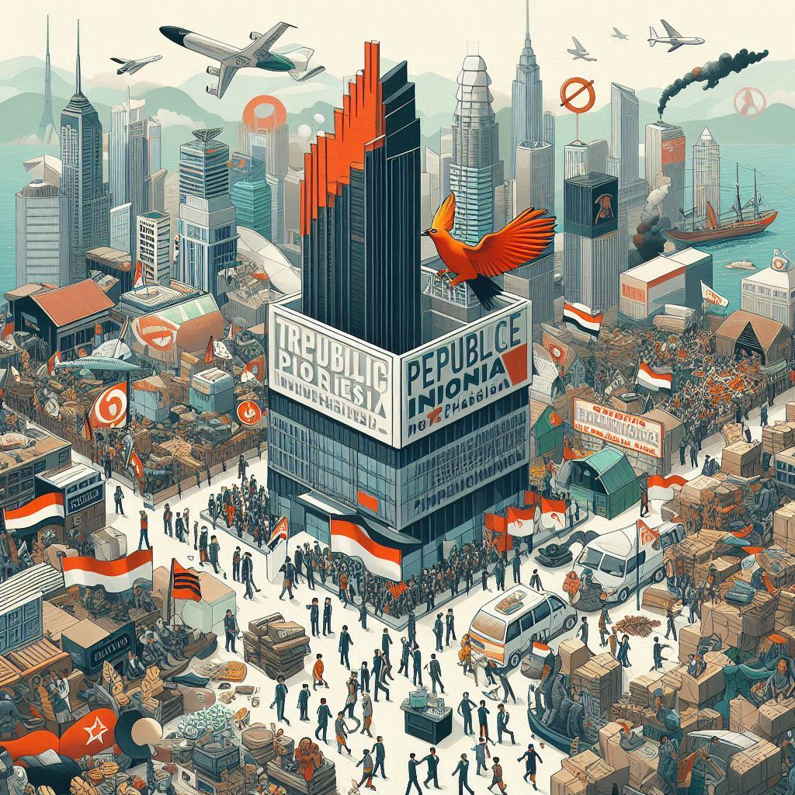
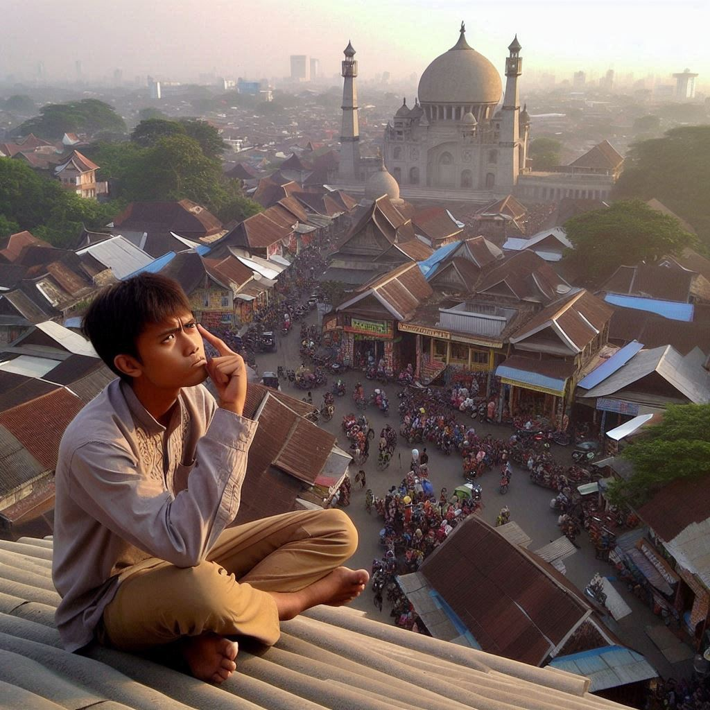

-
Sebenarnya Masalah Apa Yang Sampai Membuat Daerah Papua Ingin Bebas Dari NKRI?Papua, sebuah wilayah yang kaya akan sumber daya alam di Indonesia, telah lama menjadi sorotan dalam konteks politik dan sosial. Gerakan kemerdekaan Papua dari NKRI (Negara Kesatuan Republik Indonesia) telah memicu debat yang panjang dan kompleks. Artikel ini akan mengulas secara mendalam tentang latar belakang sejarah, faktor-faktor yang mendorong gerakan kemerdekaan Papua, respon pemerintah Indonesia, pandangan internasional, serta potensi dampak dari upaya pemisahan ini terhadap...Sosial
-
 Apa Perbedaan yang Kerap Menjadi Perdebatan di Media SosialMedia sosial telah menjadi platform utama bagi masyarakat untuk berbagi pandangan, informasi, dan opini. Namun, dengan kebebasan berpendapat ini, berbagai perbedaan sering kali menjadi sumber perdebatan panas di dunia maya. Artikel ini akan membahas beberapa topik yang paling sering memicu perdebatan di media sosial dan dampaknya terhadap masyarakat.Sosial
Apa Perbedaan yang Kerap Menjadi Perdebatan di Media SosialMedia sosial telah menjadi platform utama bagi masyarakat untuk berbagi pandangan, informasi, dan opini. Namun, dengan kebebasan berpendapat ini, berbagai perbedaan sering kali menjadi sumber perdebatan panas di dunia maya. Artikel ini akan membahas beberapa topik yang paling sering memicu perdebatan di media sosial dan dampaknya terhadap masyarakat.Sosial -
 Netizen Indonesia Sering Kali Diangap Sebagai Pengguna Media Sosial yang Sangat Agresif: Apa yang Membuat Mereka Berperilaku Demikian ?Netizen Indonesia sering kali mendapat reputasi sebagai pengguna media sosial yang sangat agresif. Artikel ini mengulas faktor-faktor yang mendorong perilaku tersebut, dampaknya terhadap komunitas online, dan upaya yang bisa dilakukan untuk menciptakan lingkungan digital yang lebih positif.Sosial
Netizen Indonesia Sering Kali Diangap Sebagai Pengguna Media Sosial yang Sangat Agresif: Apa yang Membuat Mereka Berperilaku Demikian ?Netizen Indonesia sering kali mendapat reputasi sebagai pengguna media sosial yang sangat agresif. Artikel ini mengulas faktor-faktor yang mendorong perilaku tersebut, dampaknya terhadap komunitas online, dan upaya yang bisa dilakukan untuk menciptakan lingkungan digital yang lebih positif.Sosial -
Kenapa IQ Masyarakat Indonesia Sangat Rendah diantara Negara Asia TenggaraIQ atau Intelligence Quotient merupakan ukuran umum untuk mengevaluasi kemampuan kognitif seseorang. Di antara negara-negara Asia Tenggara, Indonesia sering kali menunjukkan angka rata-rata IQ yang lebih rendah. Artikel ini akan menjelaskan berbagai faktor yang mungkin menyebabkan rendahnya IQ masyarakat Indonesia dibandingkan dengan negara-negara tetangga, serta implikasi dari fenomena ini terhadap kesehatan, pendidikan, dan pembangunan nasional.Sosial

.png)